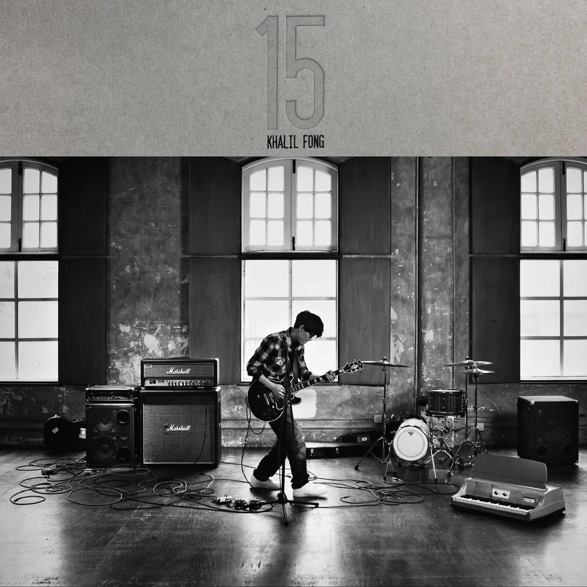
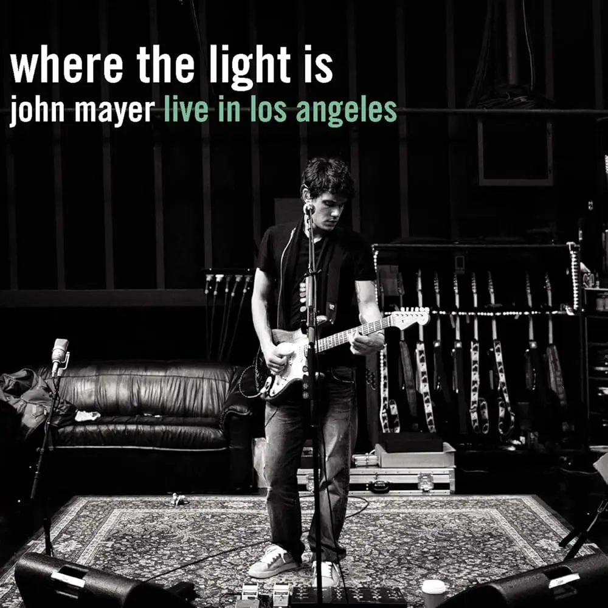
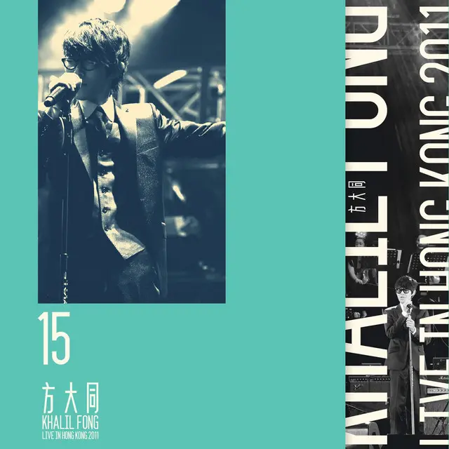

Album#15
15
{kind=link}

专辑信息
- 专辑名称：15
- 歌手：方大同 (Khalil Fong)
- 年份：2011-04-21
- 风格：R&B、流行、摇滚
- 时长：55:12

本来有其他专辑想要分享的，但是突然想到即将写第 15 篇专辑分享，是不是可以有点彩蛋呢？我很喜欢方大同，而他正好有一张专辑《15》，在第 15 篇专辑分享中，分享《15》这张专辑怎么样呢？如果将来有人输入了 album-15.html 的 URL，而打开的文章又正好是《15》，也许会会心一笑吧 :)
「15」是方大同开始学吉他的年龄，受到 Eric Clapton、Jimi Hendrix、B.B. King、John Mayer 等人的影响，让 15 岁的他决定拿起了吉他，开始学着弹起了歌曲，「15」是方大同与吉他的重拾旧缘，专辑里的吉他演奏也确实很出彩。
这张专辑里的每一首歌我都很喜欢，无论是歌词、旋律、编曲都很好。大多数歌曲的旋律都很悦耳，而编曲更是不错，仔细听每首歌的吉他、贝斯、鼓等乐器，它们的编排听起来很丰富，让人享受。
专辑发布的同年十二月，大同在举办了 「15」Live in HK 2011 香港演唱会，里面有不少「15」里面的歌曲，以及 「15」之前的一些歌曲，是我很喜欢的一场 Live，如果时间可以倒退的话，真希望可以去现场听一听。在听完「15」这张专辑后，极力推荐也去看看这场 Live，每首歌都有很多好听的器乐 Solo，是一次全新的改编，和专辑里的歌又是不一样的感觉。
「15」封面中大同的姿态，给我的感觉是他在享受着吉他的弹奏，沉浸在一段好听的吉他 Solo（独奏）中。封面似乎是致敬了 John Mayer 的 《Where the Light Is: John Mayer Live In Los Angeles》。
{kind=link}

「15」是一张无论何时翻出来听都会觉得不错的专辑（大同的专辑大多都如此），也推荐听听《15 香港演唱会 (2011 Live)》，都是我的心头好。
{kind=link}

《Gotta Make A Change》作词、作曲、编曲方大同。
Gotta make a change x8
Let's change the world x4
每个城每个省每个国家
每个人记得这是我们的家
We look at the signs and we think it's ok1
You've got death
I've got trouble
You've got grief
I've got pain
And the world is in vain
only thinking of gaining
the things that eventually put us to shame
It's like the whole wide world
is at war
It's like the whole wide world
is at war
It's your world2
Don't forget your world
Don't you turn your back
on the things that you do
It's your world
Don't forget your world
Don't you realize
When it s too late
Don't forget the world is yours
Gotta make a change x8
The people run dry with3
The games that we play
in contempt of the trauma
You achieve all the fame
Thru the lies
Thru the shame
You will cease to remain
for what's left
is the product of the greed from your reign
It's like the whole wide world
is at war
It's like the whole wide world
is at war
It's your world
Don't forget your world
Don't you turn your back
on the things that you do
It's your world
Don't forget your world
Don't you realize
When it s too late
Don't forget the world is yours
Listen to the tree4
They see everything you do
Look up at the sky can't you see
All things you do become a sign
that everything has a reason for leaving
If you think there's a way to change your life
Then it's now time to say that I believe
It's your world
Don't forget your world
Don't you turn your back
on the things that you do
It's your world
Don't forget your world
Don't you realize
When it's too late
Don't forget the world is yours
Gotta make a change x8
《Gotta Make A Change》前奏是一段蛮好听的弦乐，仔细听的话，会发现弦乐的底下有大量的枪声。给我的感觉就像是看着不停歇的战争，心里满是悲伤。在最后弦乐变得昂扬，似乎是下定了什么决心，然后大同就唱出了「Gotta make a change」，是时候做出一些反抗，一些改变了。
这是一首呼吁世界和平的歌，也是一首鼓励做出改变的歌。
Don't forget your world
Don't you turn your back on the things that you do
If you think there's a way to change your life
Then it's now time to say that I believe
一首类似的歌是 Michael Jackson 的 Man In The Mirror ，也是一首很好听的歌。
I'm starting with the man in the mirror.
I'm asking him to change his ways,
and no message could have been any clearer.
If you wanna make the world a better place,
take a look at yourself, and then make a change.
☞ Live
《昙花》作词方大同/多多，作曲、编曲方大同。
Hey 一个女孩 为了恋爱
一生的命运从此改
这是意外 不算意外
没有应该不应该
世上 每天有不同的可惜
她总选择微笑多於哭泣
总要面对不要想着 放弃
生命还没结束自然就有它的目的
难道不是爱 这是爱 不变的爱
她的每一步 比常人走得快
可以是无奈 可以是 无比精彩
爸爸走了妈妈不弃小孩
她沉默 她认错 她错过钟声的生活
可诗篇里 也没有人 世情能看破
爱情只深夜一现过 最後又结了果
世上 每天有不同的可惜
她总选择微笑多於哭泣
总要面对不要想着 放弃
生命还没结束自然就有它的目的
难道不是爱 这是爱 不变的爱
她的每一步 比常人走得快
可以是无奈 可以是 无比精彩
爸爸走了妈妈不弃小孩
A young girl only seventeen, young like the evergreens, 5
lookin’ at life like a portal for the immortal
and life took a trip on her makin’ her wife of a man
who wasn’t man enough just to hold her for life,
he left soon after the child was born with scorn
and she mourned everyday and every night but with might
and prayer and she found freedom,
awareness and then she walked strong with her child in arm
难道不是爱 这是爱 不变的爱
她的每一步 比常人走得快
可以是无奈 可以是 无比精彩
就算是安排 至少自己安排
难道不是爱 这是爱 不变的爱
她的每一步 比常人走得快
可以是无奈 可以是 无比精彩
就算是安排 至少自己安排
难道不是爱 这是爱 不变的爱
她的每一步 比常人走得快
可以是无奈 可以是 无比精彩
就算是安排 至少自己安排
这是一首写给单身妈妈的歌，有人说写的是周耀辉（和大同合作过的填词人）的母亲，我还为此去看了周耀辉回忆母亲的书 ⸺ 《纸上染了蓝》。
这首歌的编曲蛮摇滚的，比较硬核，给人一种坚毅的感觉。
就如同歌里唱的那位单亲妈妈，经历了昙花一现爱情，男人走了，却留下了孩子，她没有放弃孩子，为了孩子，她从一个柔弱的少女，变成了一个坚韧的女人，「总选择微笑多於哭泣」，「每一步 比常人走得快」。
推荐看 Live，说唱前的前奏铺垫、大同铿锵有力的说唱、大同唱完后坚定大步地离场、接着乐队尽情地演奏 Solo，真是听得让人如痴如醉。
《张永成 (feat. Ghost Style)》作词方大同/何鸿德，作曲编曲方大同。
对手 我跟你没有什麽怨仇
我没有金带在我背後
我老婆让我觉得幸福
你口气那麽大
声怎麽不累
我帮不了你那麽欠揍
比武 你所示范的只是欺负
你叫我回家当人媳妇
你骂我姿势像个尼姑
我只想赶快打完这擂台
让我快点回家
They say I'm cocky but I'm good I'm like the king of the hood6
Missin' my queen I'm mean you wanna test make a blood fest so obscene
I'm a student of this game so let's respect this status
Challengers must have madness cos' in the ring I'm the baddest
Chinaman with sticky hands spread my style across the land
You wanna step I won't be rushed I'll end you quick
but let's have lunch together let's pour tea my brother
I can teach you a righteous life or about life after death
There's nothin' left in an aftermath
拳头 我摊了手 再出此拳头
你耍不了我这个念头
我练了大有几个年头
你受了我八拳不退
莫非我要试出绝窍
唱的是叶问，但歌名却叫「张永成」（叶问妻子）。
舞台上的叶问，懒得理会对手的垃圾话，只想赶紧打完回去家见老婆。
这首歌也挺摇滚的，很符合擂台上剑拔弩张的感觉，贝斯的存在感也蛮强的，还能听到一些摇铃的声音。
歌曲的最后能听到一段简短的对话，一个人说「Amazing」（应该是大同？），一个小朋友说「Thank you」，不知道摇铃是不是那个小朋友演奏的。
☞ Live
《因为你》作词、作曲、编曲方大同。
友人对我 hi
街头的情人又说 bye
孩子的父亲赞他乖
写啦啦啦啦啦啦
啦啦啦啦啦啦啦
也许是天气
也许是运气
也许是因为有人不放弃
也许是天意
也许不愿意
也许是因为她
还是因为我和你
是不是你错
是不是她错了
但随便说说也不算
你别来怪我
好事会变坏
这世界都环绕着爱
爱过以后会放的开
写着啦啦啦啦啦啦
啦啦啦啦啦啦啦
也许是天气
也许是运气
也许是因为有人不放弃
也许是天意
也许不愿意
也许是因为她
还是因为我和你
写一首歌
填一首诗
录完这编曲
这样就是一首歌的生命
如此动听
如果你觉得我在讲你心里的话
这也许是天气
也许是运气
也许是因为有人不放弃
也许是天意
也许不愿意
也许是因为她
还是因为我和你
因为我和你
因为我和你
因为我和你
一首听起来很舒服的歌。
歌曲的开头，在吵杂的背景中，一个女生采访大同：
女生：听说大同为了新专辑写了很多新歌
大同：嗯
女生：那会跟以前有什么不同吗？
大同：嗯，也许会啊
女生：你写歌的灵感是哪里来的
大同：这……
（进入前奏）
而这首歌也许就是一个回答：
也许是天气
也许是运气
也许是因为有人不放弃
也许是天意
也许不愿意
也许是因为她
还是因为我和你
因为我和你
《情胜策略》作词农夫，作曲、编曲方大同。
告诉你恋爱的秘方
让你能牵制着对方
保证他以後绝对没有胆量
跟你抬杠
最重要是你对他不关心
他呼天喊地
你也不眨眼睛
转过来要他每天迁就着你
爱得无敌
你应该清楚
对爱情谁越不在乎越不会输
就算要分开不会哭也不痛苦
继续装酷
到最後一定会胜出
但留不住幸福
我发现恋爱的秘密
一下子爱变得容易
只要一恋爱只有一个目的
争取胜利
每当爱上人不要太认真
要明哲保身不能爱得太深
收起情感只需要把你爱人
当作路人
你应该清楚
对爱情谁越不在乎越不会输
就算要分开不会哭也不痛苦
继续装酷
到最後一定会胜出
但留不住幸福
恋爱的高手
苦练到白头
最後只能够看着她跟他手牵着手
胜利的背後
是一无所有
没有爱没有感受只伤口
所以朋友
你应该清楚
对爱情谁越不在乎越不会输
就算要分开不会哭也不痛苦
继续装酷
到最後一定会胜出
但留不住幸福
你应该清楚
对爱情谁越不在乎越不会输
感情里没必要争输赢，要赢，也应该是双赢。歌曲里管乐蛮好听。
☞ Live
和声、吉他 Solo、管乐好听。
在歌曲之前，大同说到：
如果你觉得爱情是一个游戏，可能你得再考虑一下 :P
《无菇朋友》作词、作曲、编曲方大同。
我走过红地毯
誰在沙發上
我不認得
碎的玻璃杯
我也破了嘴
我不記得
無菇的朋友
也許不會打你
無菇的朋友
也許不會殺你
無菇的朋友
也許悶也許惆
但無菇不會忘無辜朋友
剛才還在玩
現在很完蛋 但但但
我不是壞蛋
不信問約翰 她在這兒
無菇的朋友
也許不會打你
無菇的朋友
也許不會殺你
無菇的朋友
也許悶也許惆
但無菇不會忘無辜朋友
別就一眼
怪怪的盯著我
我不知道我應不應該覺得難過
我錯過了什麼
無菇的朋友
也許不會打你
無菇的朋友
也許不會殺你
無菇的朋友
也許悶也許惆
但無菇不會忘無辜朋友
無菇不會忘無辜朋友
关于《无菇朋友》：
几个月前，美国有则新闻报导有关一群一起吃「魔力磨菇」的朋友， 因为产生了幻觉，其中一人以为他的朋友是恶魔，连同想要阻止他杀害朋友的女孩子也被用非常残暴的方式一起杀掉了。 人们对於滥用毒品药物的后果一无所知，这对我来说是个荒谬的笑话，在这个需要大家一起集中能量作积极建设的时刻，竟然会从原来尊贵的人性自贬到如此的低下，我觉得用这种温暖而接近童真的民谣吉他指法，去对照一个极度灰暗的题材，是个完美的象徵。
最开始我也不了解创作背景，只是觉得歌曲听起来蛮轻松温暖的，但听到「無菇的朋友 也許不會殺你」也会觉得有些奇怪，为什么这样一首歌里会出现「殺你」这样的歌词呢？后来看了评论才明白。
歌曲里还有一段口琴演奏，民谣吉他和口琴，一下子就想到了 Bob Dylan。
☞ Live
《自以为 (feat. 徐佳莹)》作词崔惟楷，作曲方大同/Edward Chan，编曲方大同。
开个玩笑 别太认真我只是天生幽默
干嘛这样 转过头不理我
好吧宝贝 是我哪里做错说错加搞错
冷静一下别发火
不要生气 我说一百次对不起
不要叹气 吵架甚麽了不起
我说男生的无所谓都是自以为
我们女生一回一回都在给你机会
请你别理由一堆别再傻傻自以为
怎麽学也不会 是误会是赎罪是你不对
是我闯祸 还是每个月的亲戚害了我
干嘛这样 我受不了沉默
好吧宝贝就当作是我不对怪我 拜托
来抱一下别闪躲
不要生气 我说一百次对不起
不要叹气 吵架甚麽了不起
我说男生的无所谓都是自以为
我们女生一回一回都在给你机会
请你别理由一堆别再傻傻自以为
怎麽学也不会 是误会是赎罪是你不对
(你到底在说什啊？你知不知道你今天说什么啊？为什么你连这点事都做不到？
你真的是很胡闹诶！我不想听！你说了又做不到我为什要听！
我不要听我不要听！真的要被你气死了呃 (抓狂)！)
是不是不够爱我 是不是不了解我
是不是我说的没进你耳朵
我说男生的无所谓都是自以为
我们女生一回一回都在再给你机会
请你别理由一堆别再傻傻自以为
怎麽学也不会 快承认自己不对
我说男生的无所谓都是自以为
我们女生一回一回都在给你机会
请你别理由一堆别再傻傻自以为
怎麽学也不会 是误会是赎罪是你不对
歌词描述的内容太形象了，我想很多情侣都有类似的经历。「是我闯祸 还是每个月的亲戚害了我」这句歌词有点好笑，哈哈。女声出来的时候确实能感受到一些生气的感觉。歌曲里也隐约有一些管乐，好听，是专辑里我很喜欢的一首。
☞ Live
Live 里，Yoyo 和 Angelita 一起扮演歌中的女生角色，唱得更有张力，太好听了！相比专辑里的版本，我会更喜欢 Live 版。
《二人游》作词、作曲、编曲方大同。
不要再过来 不要靠近我
绝别再诱我 也别再秀
你知不知道 何时可收
这不能把握就别再进我的二人游
我已经透过 朋友网络
他们告诉我 你犯的错
我想你应该向她道歉
自从你嘴边散的谎言 哦 不对
别再靠近 你要小心
别再一步 你很离谱
你知不知道 我现在好好
不要再骚我别再来闹我的二人游
别再 别再告我的二人游
编曲听起来充满暧昧的一首歌，拍子是舞曲的拍子，「澎恰恰、澎恰恰」，舞蹈时的两人也是相当暧昧的。
☞ Live
在 Live 里，暧昧、微醺的旋律中，聚光灯下的大同也是充满了魅力，闪闪发亮。
除了《二人游》，在 Live 里还能听到《三人游》、《四人游》:P
《Over》作词崔惟楷/Luke Skywalker Tsui，作曲、编曲方大同。
谎言是毒液 有心无意 雨季般的哭泣
真情不易 一败涂地 这场爱没了伏笔
他不值得你为他可惜 到了结局的戏
傻傻的你 痛得彻底 其实我舍不得你
Why oh why 又受伤害
Oh tell me why oh why
又被回忆收买 忘不掉的旧爱 走不开
It's over 心碎了然后呢
你为他消瘦了也换不回什么了
爱走了 it's over 心碎了然后呢
结束了闷够了是否该放手了
灰的坏的苦的恨的都过去了阳光出来了
他怀着歉意 埋葬甜蜜 短暂的坏天气
或许天意 断了联系 请你练习爱自己
他不够珍惜 不懂疼你 不需要再生气
伤心的你 就到这里 最后一次的分离
Why oh why 又受伤害
Oh tell me why oh why
又被回忆收买 忘不掉的旧爱 走不开
It's over 心碎了然后呢
你为他消瘦了也换不回什么了
爱走了 it's over 心碎了然后呢
结束了闷够了是否该放手了
灰的坏的苦的恨的都过去了阳光出来了
It's over 心碎了然后呢
你为他消瘦了也换不回什么了
爱走了 it's over 心碎了然后呢
结束了闷够了是否该放手了
灰的坏的苦的恨的都过去了
阳光出来了而悲伤再见了
编曲听起来很丰富，会让我想到 D'Angelo 的 《Voodoo》 这张专辑， 是一首让人想闭着眼享受的歌，旋律也很好听。
☞ Live
Live 里，鼓手一丁的 Solo 打的太棒了！整个乐队都很享受，那种沉浸在音乐中的感觉也能感染到听众。
《Take Me》作词、作曲、编曲方大同。
全世界都大乱
为什么只有我一个人逃
全世界要财权力
我怎么总觉得没有人好
假如有谁 不玩这游戏 能带来正义
和我一起找到全新的终点
而以后 我这朋友
就能拥有一颗最善良的心
天空最闪亮的星
Just Take me to the address
Take me to the address
Take me to the address
Just Take me to the address
Take me to the address
这就是我的主义 创未来
全世界都大乱
为什么只有我一个人逃
全世界都像奴隶
我怎么总觉得没有人跑
假如乌龟 不受兔子气 所以不在意
最后一起到达全新的终点
而以后 我这朋友
就能拥有一颗最善良的心
天空最闪亮的星
Just Take me to the address
Take me to the address
Take me to the address
Just Take me to the address
Take me to the address
这就是我的主义
Just Take me to the address
Take me to the address
Take me to the address
Just Take me to the address
Take me to the address
Take me to the address
Just Take me to the address
Take me to the address
Take me to the address
Just Take me to the
Take me to the
这就是我的主义
创未来
也是旋律好听的一首，吉他演奏好听。
而以后 我这朋友
就能拥有一颗最善良的心
天空最闪亮的星
☞ Live
Live 开头剪辑的真不错，大同的吉他 Solo 又帅又好听，很让人享受！
《好不容易》作词、作曲、编曲方大同。
太多人失意
太多人忘记
太多人都说爱情失重无影
爱 也许是我的
爱 也许是他的
爱 也需要你做媒
听说人呻鸣
听说人分离
听说人都说爱也无法证明
坏 别在数我的
怪 别在诉她的
再也不视你的美
我在这里 带著你 很值得
一直我会爱著你
心服的 心不舍
一切都不可思议
因为爱的只有你
我已换了自己
我意识到
好不容易 好不容易
好不容易 爱到你
总有人坚定
总有人相信
总有人懂得爱能深刻无底
爱 也许是我的
爱 也许是她的
爱 也许要你做媒
我在这里
带著你 很值得
一直我会爱著你
心服的 心不舍
一切都不可思议
因为爱的只有你
我已换了自己
我意识到
好不容易 好不容易
好不容易 爱到你
我还有万事不会
已听不少无可到老的承诺
世界里有多少胡不归
而我有我知己
陪我度过四季
没有什么在这一生可求
我在这里
带著你 很值得
一直我会爱著你
心服的 心不舍
一切都不可思议
因为爱的只有你
我已换了自己
我意识到
好不容易 好不容易
好不容易 爱到你
《好不容易》，我很爱的一首，大概也是我喜欢上大同的起点，当时看完了 可能是方大同新专辑的唯一专访!丨真假方大同终于同框丨HOPICO，感受到大同这些年身体不好，完成了最新的专辑《梦想家 The Dreamer》 已经是很不容易了，在 视频的片尾 放了大同的《好不容易》，很是感动，也让我记住了这首歌。
那时，刚喜欢上了大同，他说还有很多计划，但谁曾想没多久他就离去了，难以相信，也难过。
《好不容易》的编曲听起来简单平实一些，或许爱也是如此，没有那么多的跌宕起伏，但始终坚定不移。歌曲的尾奏很长，评论里有人说，那是「希望大家听完有想拥抱的感觉」，也有人说，那是「留给新娘步入婚姻殿堂准备的」，长长的尾奏里，似乎有着许多的感慨，让人感动，也难以忘怀。
歌曲开头的鼓点也很有辨识度，一听就知道是这首歌。
☞ Live
Live 的尾奏，会让我想起 The Beatles 的 Hey Jude。
最后的《Over Reprise》是专辑里的 Hidden Track（隐藏曲目），一首纯器乐的演奏，也蛮好听的。
脚注:
我们看到种种迹象，还以为一切安好
你面临死亡
我有麻烦
你满心悲痛
我承受痛苦
世界徒劳无益
只想着索取
那些最终让我们蒙羞的东西
仿佛整个世界都陷入了战争
仿佛整个世界都陷入了战争
这是你的世界
别忘了你的世界
别对你所作所为视而不见
这是你的世界
别忘了你的世界
难道你要等到为时已晚才醒悟
别忘了世界属于你
因为我们玩的游戏
人们疲惫不堪
对创伤不屑一顾
你通过谎言和羞耻获得所有名声
你将不复存在
因为剩下的
只是你贪婪统治的产物
聆听树木
它们目睹你的一切
仰望天空，难道你看不到吗
你所做的一切都成为征兆
表明万物离去皆有缘由
如果你认为有办法改变你的生活
那么现在是时候说 我相信
一个年仅十七的少女，青春如常青树般盎然，
将生命视作通往永恒的门户。
然而命运却捉弄了她，让她成为一个男人的妻子，
一个没有足够担当，无法与她相守一生的男人
孩子出生后不久，他便带着轻蔑离去，
她日夜悲伤，却凭借着坚韧的力量和祈祷，
她找到了自由，获得了觉醒，
然后她怀抱孩子，坚强地前行。
他们说我傲慢但我很强，我就像街区的王者
想念我的女王，让我变得凶狠，你想挑战就会引发一场血腥的混战
我也是从事这行的，所以给我放尊重点
挑战者必须疯狂，因为在擂台上我是最强者
这个会黐手（咏春）的中国人，把我的风格传遍天下
你想挑战，我不会慌乱，我会迅速解决你
我们可以一起午餐，一起喝茶，兄弟
我可以教你正直的生活，或是死后的世界
后果将是一无所有